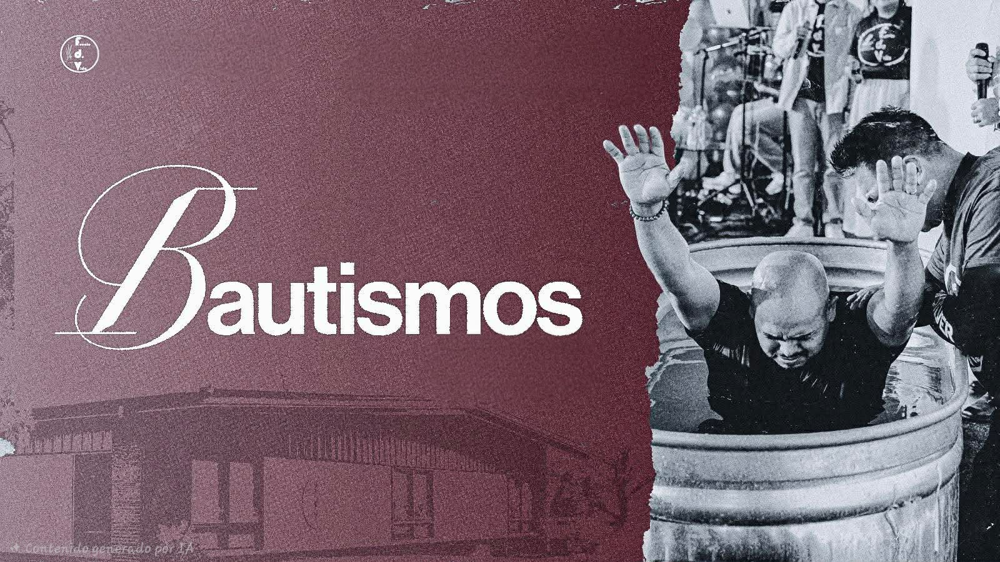

Somos parte de la Iglesia Apostolica de la Fe en Cristo Jesus. Nuestras creencias estan basadas en la Biblia y en los principios del movimiento apostolico pentecostal.
Creemos que la Biblia es la Palabra de Dios inspirada y la autoridad suprema para nuestra fe y nuestra vida. Ningun hombre tiene mayor autoridad que la misma Palabra de Dios.
Creemos que hay un solo Dios verdadero, todopoderoso y eterno. Él es tan grande y poderoso que puede manifestarse de maneras que van más allá de lo que el ser humano puede imaginar.
Creemos en el bautismo por inmersión completa en agua en el nombre de Jesucristo para el perdón de los pecados, conforme a la enseñanza bíblica.
Creemos que Jesucristo es nuestro Señor y Salvador, y que en ¿l se revela plenamente Dios para la salvación de la humanidad.
Creemos que la salvación se recibe a través del bautismo en agua en el nombre de Jesucristo. Después de este paso, el creyente es llamado a permanecer firme en la fe, viviendo activamente el propósito que Dios tiene para su vida.
Creemos en el bautismo del Espíritu Santo como una experiencia real y transformadora, acompañada por la evidencia de hablar en otras lenguas.
Creemos que Dios llama a su pueblo a vivir una vida de santidad, cumpliendo los estándares establecidos en la Biblia y siendo luz para el mundo.
Creemos que Dios sigue obrando hoy por medio de los dones espirituales, incluyendo sanidades, milagros y otras manifestaciones de su poder.
Nuestra misión es predicar el evangelio de salvación con pasión, discipular a cada miembro y prepararlo para la misión, fortalecer las familias dentro y fuera de la iglesia, rescatar almas para el reino de Dios.
Nuestra visión es ser una iglesia 100% celular, trabajando sobre los puntos de la mision.
Creemos que la fe debe reflejarse en el amor y el servicio. Por eso procuramos ayudar a quienes lo necesitan, acompañar a las familias y compartir la esperanza de Jesucristo con humildad y compasión.
Creemos que la iglesia es una familia espiritual llamada a vivir en amor, servir a los demás y compartir el evangelio. Juntos buscamos fortalecer a las familias y ser una luz de esperanza en Madison.